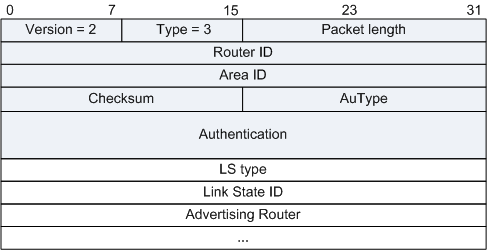

两台路由器互相交换过DD报文之后，知道对端的路由器有哪些LSA是本地的LSDB所缺少的和哪些LSA是已经失效的，这时需要发送LSR报文（Link State Request Packet）向对方请求所需的LSA。内容包括所需要的LSA的摘要。LSR报文格式如下图所示，其中LS type、Link State ID和Advertising Router可以唯一标识出一个LSA，当两个LSA一样时，需要根据LSA中的LS sequence number、LS checksum和LS age来判断出所需要LSA的新旧。

| 字段 | 长度 | 含义 |
|---|---|---|
| LS type | 32比特 | LSA的类型号。 |
| Link State ID | 32比特 | 根据LSA中的LS Type和LSA description在路由域中描述一个LSA。 |
| Advertising Router | 32比特 | 产生此LSA的路由器的Router ID。 |
报文示例
图1 OSPF LSR

参考标准
| 标准 | 描述 |
|---|---|
| RFC2328 | OSPF Version 2 |